Today I will build a VPC with two public and two private subnets, and host web and database servers inside them, without using the wizard.
Create a VPC
Here’s the aws VPC document.
Go to the VPC service page, create a VPC called AnranVPC, and specify a range of IPv4 addresses for the VPC in the form of a Classless Inter-Domain Routing (CIDR) block: 10.0.0.0/16.
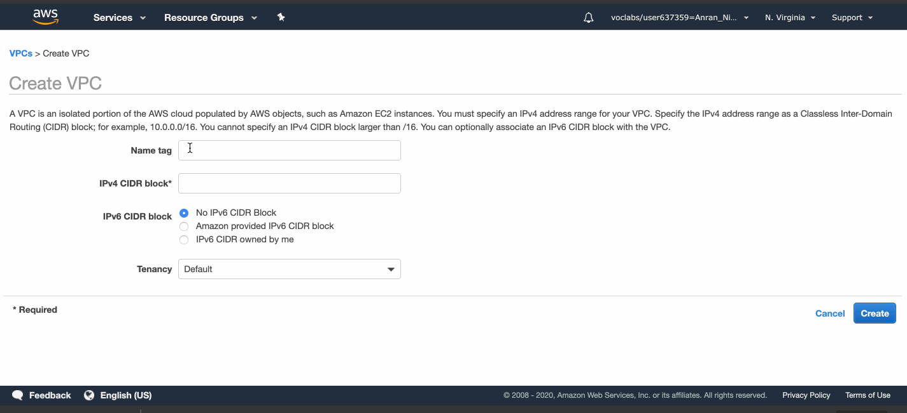
There is a default Route Table and a default Network ACL (access control list) attached to my VPC already.
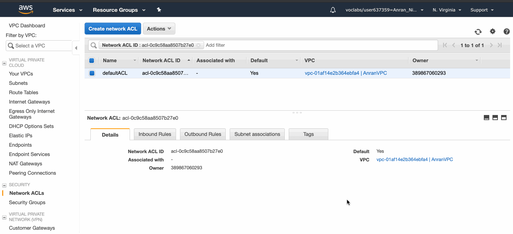
The default Network ACL allows all traffic.
A network ACL contains a numbered list of rules. We evaluate the rules in order, starting with the lowest numbered rule, to determine whether traffic is allowed in or out of any subnet associated with the network ACL.
The default Route Table directs network traffic with the IP address within the range 10.0.0.0/16 to local nodes.
Create Subnets
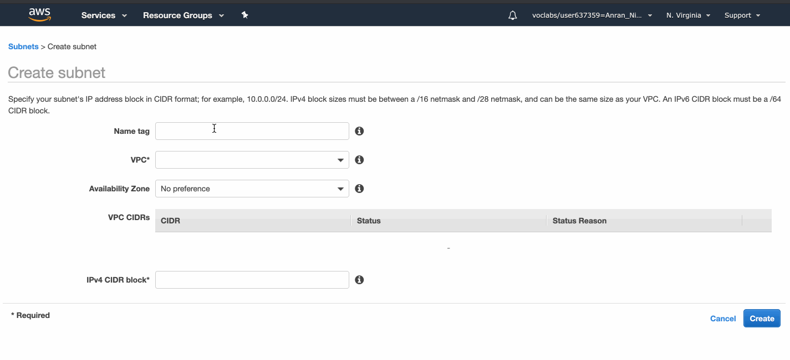A VPC spans all of the Availability Zones in the Region. You can create subnets in multiple AZs in your VPC to enhance availability and redundancy.
I created 2 public subnets in 2 availability zones, and 2 private ones in 2 availability zones.
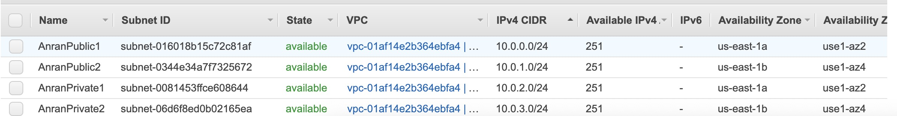
Each subnet has 251 availability IPv4 addresses, because although there are 8 free digits for each subnets, there are five reserved IP addresses:
- 10.0.0.0: Network address.
- 10.0.0.1: Reserved by AWS for the VPC router.
- 10.0.0.2: Reserved by AWS. The IP address of the DNS server is the base of the VPC network range plus two. For VPCs with multiple CIDR blocks, the IP address of the DNS server is located in the primary CIDR. We also reserve the base of each subnet range plus two for all CIDR blocks in the VPC. For more information, see Amazon DNS Server.
- 10.0.0.3: Reserved by AWS for future use.
- 10.0.0.255: Network broadcast address. We do not support broadcast in a VPC, therefore we reserve this address.
By default, each subnet is attached with the VPC default Network ACL and the VPC default route table.
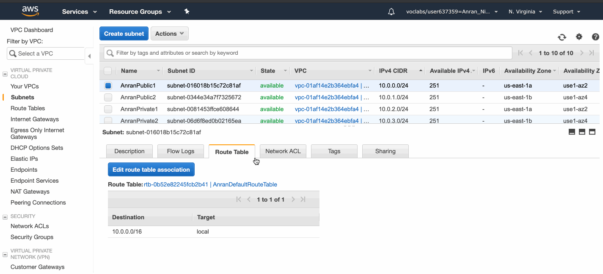
Here I did not modify the Network ACL and leave it as default (allows all inbound/outbound traffic), but there are things good to know about Network ACL:
- Each network ACL includes a default rule whose rule number is an asterisk. This rule ensures that if a packet doesn’t match any of the other rules, it’s denied. You can’t modify or remove this rule.
- You can create a custom network ACL for your VPC. By default, a network ACL that you create blocks all inbound and outbound traffic until you add rules, and is not associated with a subnet until you explicitly associate it with one.
- A network ACL contains a numbered list of rules. We evaluate the rules in order, starting with the lowest numbered rule, to determine whether traffic is allowed in or out of any subnet associated with the network ACL.
- A network ACL has separate inbound and outbound rules, and each rule can either allow or deny traffic. (while security group only allows traffic)
- You might set up network ACLs with rules similar to your security groups in order to add an additional layer of security to your VPC.
- Network ACL acts at subnet level, and one Network ACL can be attached to one or more subnets. Each subnet has to have one Network ACL, and by default is attached to the Default VPC Network ACL that allows all traffic.
Create Gateways
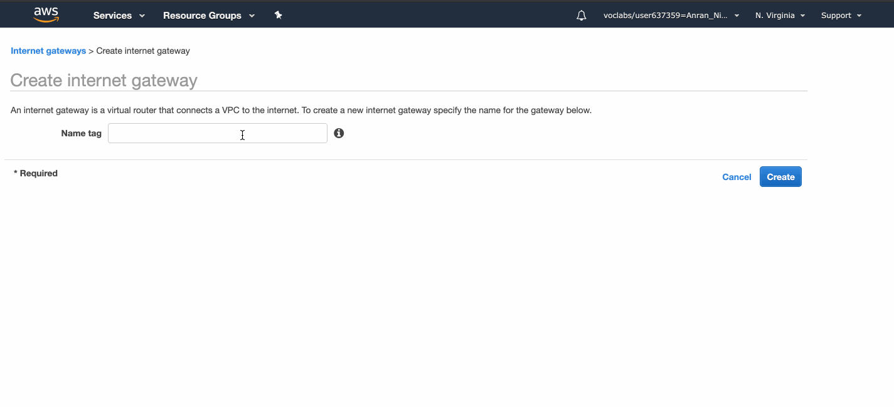I create an Internet Gateway, and give it an identifiable name.
We allocate an Elastic IP address, create a NAT gateway, put it in a public subnet, and associate the Elastic IP address with it.
The Internet Gateway has to be created first before the NAT gateway!
I created the NAT gateway first and put it into the PublicSubnet1 of AnranVPC, but it failed and was deleted automatically, because AnranVPC did not have an Internet Gateway attached at that time.
Create and Associate Route tables
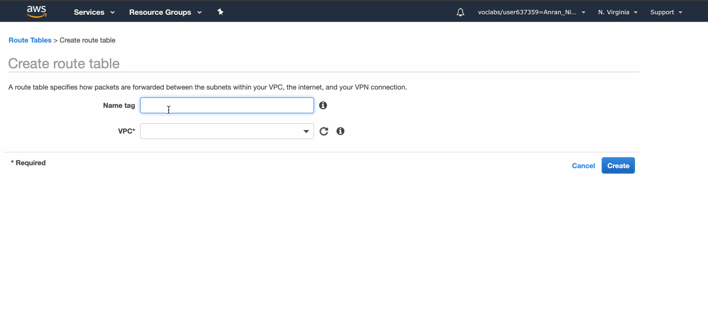A subnet can only be associated with one route table at a time, but you can associate multiple subnets with the same subnet route table.
The Internet Gateway needs to be attached to the AnranVPC before the route table can link to it.
Once the route table linking the Internet traffic to the Internet Gateway is created, both public subnets can be associated with it.
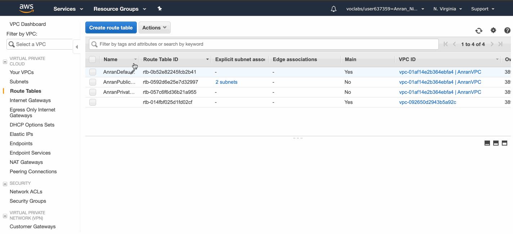The private route table direct Internet-bound traffic to the NAT Gateway.
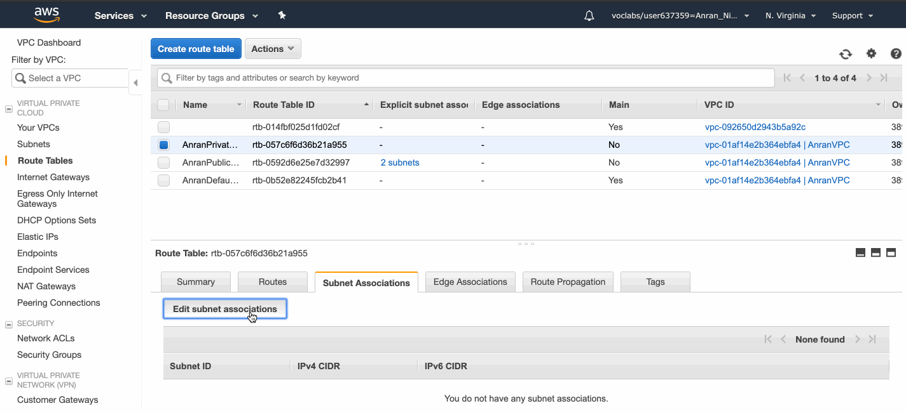Now I associate the private route table with the two private subnets.
Create EC2 instances
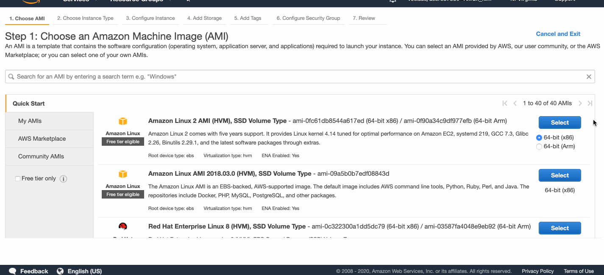I created four EC2 instances, one web server in each public subnet, and one database server in each private subnet.
Append Security Groups
A security group acts as a virtual firewall for your instance to control inbound and outbound traffic. When you launch an instance in a VPC, you can assign up to five security groups to the instance. Security groups act at the instance level, not the subnet level. Therefore, each instance in a subnet in your VPC can be assigned to a different set of security groups.
You can specify allow rules, but not deny rules.
Traffic need to be explicitly allowed by the security group.
My web servers allow SSH and HTTP/HTTPS inbound traffic from the Internet.
My database servers allow all TCP inbound traffic from within AnranVPC.
Associating an Elastic IP with web servers
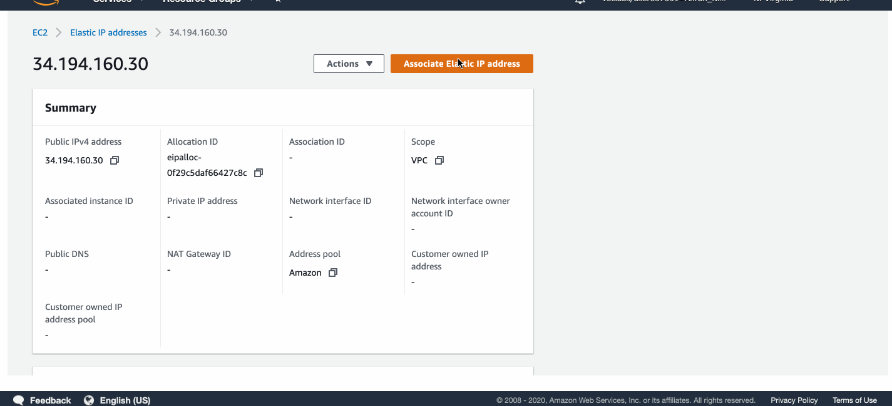I allocated two Elastic IP addresses and associated them with the two web servers.
SSH into my web servers
The public IPv4 address (as assigned by Elastic IP) of WebServer1 is now 3.234.133.181.
Now I can SSH into WebServer1 with the saved key file.
The first attempt failed because of the access permission of my private key file webserver.pem is too open.
The chmod command changes the access right of files.chmod 400 webserver.pem sets permissions so that, User / owner can read, can’t write and can’t execute.
After this command, I can now ssh to WebServer1 with my key file.
Now I am in the shell of my web server 1 virtual machine.
I can go to the root shell with :
1 | sudo su - |
And then I ran these commands:
1 | # Install Apache Web Server and PHP |
Now if I go to http://3.234.133.181/ in my browser, I can see the web page:
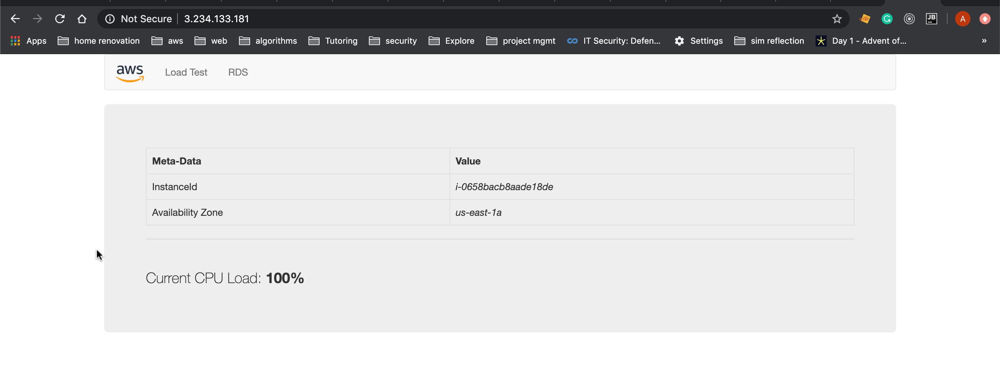
Although I cannot access database servers in the private subnets directly from my local PC, I can SSH into my web server and then SSH into my database server from there.
To do this, I need to create a copy of the database key file on my web server machine. I can open the dbserver.pem from Atom and copied the key string, and executed the following command on my web server bash:
1 | [ec2-user@ip-10-0-0-214 ~]$ mkdir key |
So these are the steps of creating the VPC, subnets, security groups, route tables, Network ACLs from scratch.
Next Steps
Host my app onto AWS